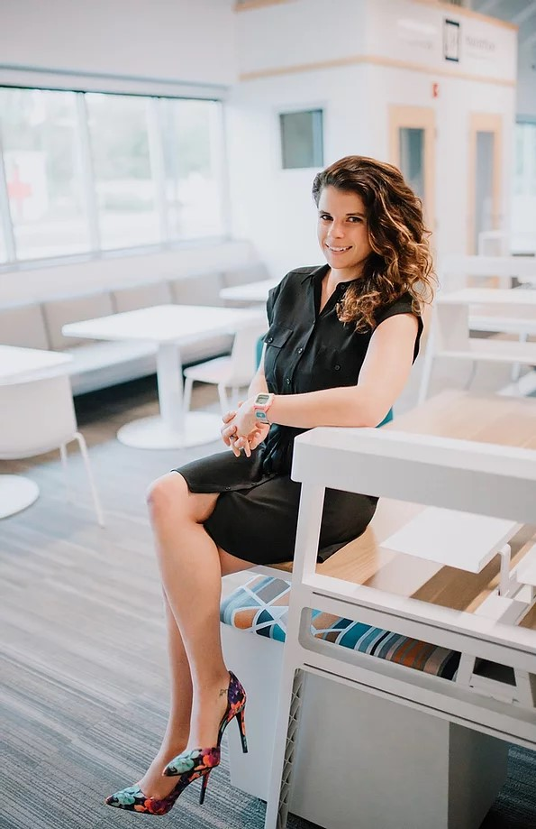
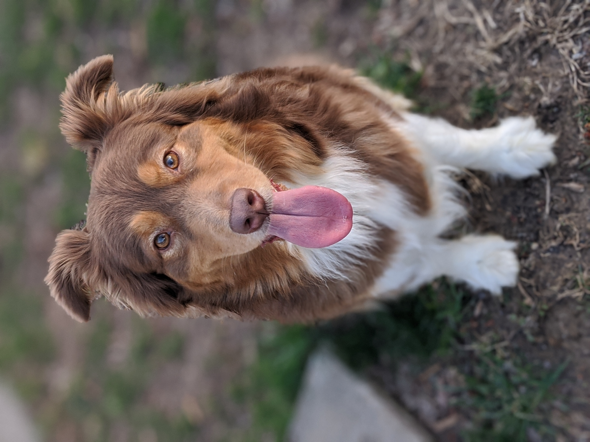

"Very few understand the value of wordless teaching." -Lao Tzu
The above quote is a part of a longer quote, which illustrates a philosophy of life which I have long embraced. The main principle is a sort of contentedness with the natural order of things.
In many ways my professional life has endured a number of births, deaths, and rebirths. In essence there is no large and luming "end" goal, rather a series of goals and motivations that
have pushed me into different paths of life, and it has been alot of fun!
With the disclaimer out of the way I will provide you, anyone who happens to read this, a brief background of my humble career and future goals.
In the traditional sense, I began my career in the military shortly after I graduated with a BA in Psychology from Indiana University of Pennsylvania. This led to a short but impactful career in the Army, which provided
me the time and space to, well, sort-of figure stuff out. After I returned home from a 12 month deployment in 2014, I chose to pursue a MS in Psychological Sciences. While studying in that program, I
worked as a floor installer, installing carpet, hardwood, linoleum, and various other products. I really enjoyed the work and many days I miss it, but it had run its course and upon completion of the program I met my future wife Kendra.
My desire to have a relationship with Kendra outweighed any career goals, and I chose to move to Missouri in order to be with her. I worked a few odd jobs (assemply line at a paper-products comapny, and line cook) while I applied for better paying jobs in my field.
After two months, I was very fortunate to recieve an opportunity to work as a Readjustment Counselor with the Veterans Hospital Administration. This 13 month term position helped provide me with the experience and continued education I needed to further my career.
During this time, there were so many wonderful people that helped and impacted my life in a positive a way, and I am forever grateful to them (I am not sure they understand just how grateful). Following this postition
I began working in homeless services. Specifically I worked with the Veteran population. This turned into a 6 year journey of ups, downs, and all arounds. Once again
there are too many people to thank during these wonderful years, but just know I am eternally thankful. However, after some soul searching, I realized I had other things I wanted to do and opportunites I wanted to pursue. Therefore, in 2021
I gave up my full-time career to return to school, which leads us to the present.
I am now in my final semester of my second bachelors degree, this time in Russian Studies with a focus on international relations. The current goal is to take my new knowledge, language skills,
and cultural compentencies to assist in policy. Hopefully have some kind of role in foriegn policy towards Eurasia.
FAMILY AND HOME
Say hello to Tucker

Kendra, my wife!

This is Indie
There is no doubt my family means everything to me! Pictured above are the three core members of my family. Centered is my lovely wife, Kendra. We were married in 2017
in Mckeesport, PA and have had alot of fun thus far. Tucker, pictured on the left was Kendra's pooch before we met and took some time to warm up to me, but now we are bosom pals. Indie is my best
friend, the best friend I never wanted. In early 2017 Kendra brought home a rescue for the purpose of "training" for two months as a foster pet. I made it very clear
that we were not going to be keeping her. Well, 6.5 years later Indie is obviously here to stay. Our little family has moved quite a bit in the last 7 years, and ended up in Pittsburgh. We live in an quaint home on the ourskirts of Munhall.
TWINE
In a galaxy far far away there was a new twine game! Below you will see a link to a twine game inspired by the Star Wars universe.
Now that you have completed your mission, welcome back! This was an enjoyable project as it allowed me to play around in the Star Wars universe and utilize it as a parallel to recent geopolitical concerns, such as the rise of strong-men leadership around the world, democratic backsliding, etc.
The original Star War trilogy, in many ways, was a call to action against imperialism. Thus, the goal of this project was to focus the player on taking action against an ongoing threat of authoritarian politics. Obviously the intent was to keep it light and fun.
However, in a world of growing extreme politics we may all be called to defend our rights and freedoms.
IMAGINARY APP
For this project I designed an imaginery app designed to create friction and bring awareness to the user. The app is a leveler that requires the user to enter measurements three different times in order to use the level. Additionally, the app prompts the user to take three deep breaths before continuing the use of the level. Without a leveler, the only way to level a project is to measure off of surrounding fixtures (i.e. ceiling, walls, doors, windows, etc.) The level allows for a person to skip these steps and get an accurate reading. This app is designed to force the individual to make the correct measurements, multiple times, in an effort to bring more awareness to their work enviornment and create more appreciation for the leveler itself. The three breaths is used as a grounding technique to help calm the user before proceeding with the project.